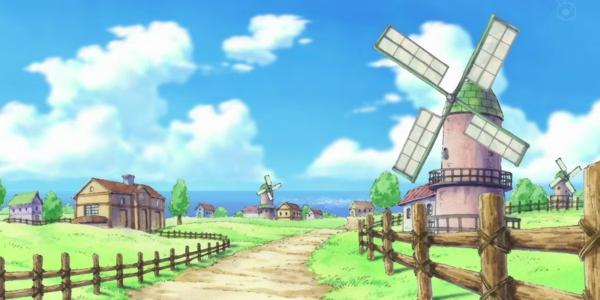
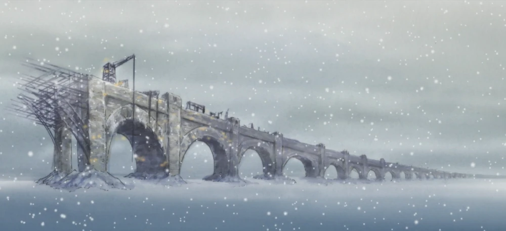
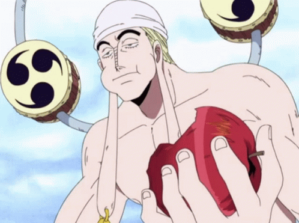
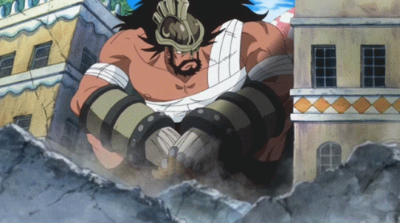
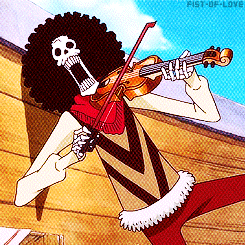

Bem-vindo à Wiki do RPG!
História do Mundo
Os mares se agitaram, para logo se acalmar, uma época de descrença paira sob o mundo. As palavras de Roger que ecoaram no dia de sua morte agora nada mais é que apenas uma lembrança do passado. Para boa parte do mundo One Piece não passa de uma lenda contada para enaltecer quem já não está mais presente, afinal, se ele existe porque até agora nenhum dos poderosos está com ele? Ainda assim, existem pessoas que acreditam nas palavras do Rei dos Piratas, continuam sua busca pelo One Piece, enquanto outras preferem ir atrás de outros sonhos pelo mundo, passando por cima de qualquer um que entrarem em seu caminho. No final, apenas uma coisa importa, entre contos e lendas, quem sabe onde está a verdade? quem vai encontrar ela? que sonhos morrerão com ela, que sonhos renascerão? O caminho para qualquer dúvida nesse mundo é o mar.
Associações
Associações são o grupo que o seu personagem pertence, cada um possui sua forma de se organizar e suas caracteristicas no mundo, pode escolher entre Piratas, Revolucionário, Marinha, Nobre e Governo Mundial.
Piratas
Piratas são criminosos que navegam nos mares, cada tripulação pirata possui diferentes objetivos e diferentes de forma de agir. Eles agem por interesse próprio na maioria das vezes e são os principais inimigos da Marinha, por conta disso, não costumam serem bem vistos na maioria dos lugares. Uma tripulação pirata é sempre independente, agindo por conta própria e indo aonde quer, mas também por serem independentes precisam conseguir a maioria das coisas sozinhos como comida, dinheiro, equipamentos, barcos, etc.
Revolucionário
O Exército Revolucionário é uma organização secreta que opera nas sombras, dedicada a derrubar o Governo Mundial e lutar contra a tirania. Ao contrário dos piratas, o Exército Revolucionário age com um propósito claro: promover a justiça e a liberdade em um mundo onde o Governo Mundial exerce um controle opressivo. Eles são os principais inimigos do Governo Mundial, e suas atividades geralmente são realizadas em sigilo. Evitam conflitos diretos, agindo mais sorrateiramente e evitando atenção desnecessária, já que seu objetivo é libertar escravos, acabar com governos tiranos, incitar rebeliões contra o governo e espalhar a verdade sobre o mundo. Revolucionários são um exército independente, ao invés de viverem no mar, possuem uma base secreta onde organizam táticas e estrategias para seus movimentos contra o governo. A hierarquia no exército revolucionário existe, sendo em ordem decrescente Comandantes, Oficiais e Agentes de Campo, porém essa hierarquia é branda, o que significa que os comandantes podem tomar a linha de frente em uma invasão. Agem apenas conforme o plano e não de maneira individual e egoista.
Marinha

A Marinha é uma das forças militares mais poderosas e influentes no mundo de One Piece. Como o órgão de aplicação da lei do Governo Mundial, sua missão principal é manter a ordem e proteger o status quo do mundo, muitas vezes em oposição direta aos piratas e ao Exército Revolucionário. A Marinha é uma organização altamente hierárquica, com uma cadeia de comando bem definida. No topo da hierarquia está o Almirante da Frota, seguido pelos Almirantes e Vice-Almirantes. Esses líderes militares são conhecidos por sua força e habilidade de combate excepcionais. A Marinha também possui uma grande força de oficiais, soldados e marinheiros comuns que operam em navios de guerra em todo o mundo. São bem quistos na maioria dos lugares, exceto ilhas piratas e similares. Sendo a força militar do Governo Mundial, possuem qualquer tipo de recurso mais facilmente. Marinheiros não agem por conta própria, apenas quando recebem alguma ordem superior e sempre com dois objetivos, defender civis e as vontades do Governo Mundial. Apesar de serem parte do governo, algumas ordens vindas até eles podem acabar não sendo bem aceitas entre as patentes mais altas, mas dificilmente contradizem, apenas obedecendo contra sua vontade tentando evitar o pior. A Marinha tem acesso a recursos significativos, incluindo tecnologia avançada e navios de guerra de última geração. Eles são capazes de mobilizar rapidamente em resposta a ameaças e têm o apoio logístico do Governo Mundial.
Nobre
Os Nobres são uma classe social privilegiada que ocupa o topo da hierarquia social em muitas ilhas do mundo, especialmente nas ilhas sob o domínio do Governo Mundial. Eles são conhecidos por sua riqueza, status e influência, mas também por seu comportamento arrogante e desdenhoso em relação aos cidadãos comuns. A sociedade dos Nobres é rigidamente estratificada, com famílias nobres hereditárias ocupando posições de poder por gerações. Eles frequentemente vivem em luxuosas mansões, desfrutando de uma vida de conforto e privilégio, enquanto os cidadãos comuns enfrentam dificuldades e desigualdades. Os objetivos dos Nobres variam, mas muitas vezes incluem a manutenção de seu próprio status e poder. Eles podem se envolver em política, comércio e conspirações para alcançar seus objetivos, frequentemente às custas dos menos afortunados. Os Nobres também podem ser notórios por sua falta de empatia em relação às dificuldades enfrentadas pela maioria das pessoas. Alguns nobres e famílias reais podem acabar sendo mais amigáveis, se diferenciando da maioria dos demais, principalmente alguns reis de importantes reinos, já que seus objetivos acabam sendo mais voltados em cuidar de seu povo do que seus próprios interesses. Na hierarquia dos nobres, eles estão abaixo apenas do Governo Mundial e consequentemente Dragões Celestiais. Sendo assim, caso seja de interesse do Governo, serão tratados da mesma forma que qualquer outro no mundo. Isso também significa que por mais que sua influência e dinheiro permitam fazer muitas coisas, não podem exatamente fazer tudo que querem. Nobres raramente lutam, ficando apenas em questões mais diplomáticas.
Governo Mundial
O Governo Mundial é uma das forças mais influentes e dominantes no mundo de One Piece. Ele é uma organização global que exerce controle sobre um grande número de ilhas e nações em todo o mundo, mantendo uma autoridade quase incontestável. Seu objetivo declarado é manter a paz e a estabilidade, mas sua verdadeira agenda pode ser mais complexa do que parece. O Governo Mundial é uma entidade altamente centralizada, com sua sede principal em Mariejois. Ele é liderado pelos Gorosei, um grupo de líderes idosos e poderosos que tomam decisões cruciais para o mundo. Abaixo deles estão os Almirantes da Marinha e vários órgãos governamentais, como o Cipher Pol e os Dragões Celestiais, que desempenham papéis importantes na manutenção da ordem. Os objetivos do Governo Mundial incluem a preservação do status quo, a manutenção da supremacia mundial e a eliminação de qualquer ameaça à sua autoridade. Eles frequentemente veem os piratas e o Exército Revolucionário como inimigos a serem combatidos a todo custo, e estão dispostos a usar métodos questionáveis para alcançar seus objetivos. A população em geral muitas vezes vê o Governo Mundial como uma força benevolente, pois ele mantém a ordem e a segurança em muitas ilhas. No entanto, há aqueles que enxergam através da fachada e veem o Governo como opressor e corrupto, especialmente nas ilhas onde os Nobres têm uma forte presença. O Governo Mundial tem recursos praticamente ilimitados à sua disposição, incluindo a Marinha, uma rede de espionagem global, tecnologia avançada e a capacidade de emitir ordens de prisão e recompensas por procurados em todo o mundo.
Geografia do Mundo
O mundo é divido em 4 mares chamados blue. East Blue, West Blue, South Blue e North Blue. Existem também um enorme continente que dá a volta no mundo com nome de Red Line, é o único continente existente. Passando entre os blues, há uma rota chamada "Grand Line", na qual a primeira metade está de um lado do mundo junto do East Blue e South Blue, essa é chamada de Paradise. A outra metade, que fica do outro lado da Red Line, fica entre o North Blue e East Blue, chamada Novo Mundo. Grand Line é a principal rota do mundo, nela se encontram as principais ilhas, principais tripulações piratas, bases da marinha e do governo mundial, e é claro, a única rota para se achar o One Piece. Aos dois lado da Grand Line se encontra o Calm Belt, um mar sem correnteza e vento. Nesse mar, habitam os reis dos mares, seres marítimos de tamanhos colossais. O Calm Belt torna praticamente impossível de se atravessar de um blue para outro, já que sem correnteza ou vento seu barco não conseguiria avançar, e com a existência dos reis dos mares seria apenas questão de tempo até um aparecer e destruir sua embarcação. Atravessar o calm belt é um feito possível apenas por grandes piratas e pela marinha, qualquer outro que tentar atravessar sem devidas condições vão enfrentar a morte certa, sendo assim, a única forma possível de se entrar na Grand Line é pela Montanha Reversa. A Montanha Reversa fica na Red Line no começo da Grand Line, o nome vem por conta de uma cachoeira com uma correnteza que vai de baixo para cima, levando os barcos ao topo da montanha, em seguida levando para a única queda de água existente que é em direção ao começo da Grand Line. Dessa forma, independente de que blue você comece sua jornada, todos começaram do mesmo lugar na Grand Line. Uma vez dentro da Grand Line é praticamente impossível de sair, afinal os Calm Belt estão de ambos os lados, sendo assim, entrar na Grand Line sendo um pirata ou semelhante é ter consciência de que você só poderá sair de lá se tornando um grande pirata, ou então, morrerá nela. Tentar atravessar a Red Line tanto por baixo quanto por cima também é impossível, porque sua extensão para baixo chega nas profundezas mais abissais dos mares e para cima chega em uma altura além das nuvens. Essa geografia tão separada faz com que o clima das ilhas seja completamente diferente. Cada ilha tem uma estação do ano, nunca mudando seu clima independente da época do ano. Não apenas isso, é um dos principais fatores pela dificuldade de informações se espalharem pelo mundo, sendo bem comum que pessoas que morem no mesmo mar não saibam da existencia de uma ilha mais afastada ou sequer saibam a verdade por trás de algum evento histórico.
Grand Line
A principal rota do mundo, nela está os principais piratas, bases da marinha, ilhas com pessoas muito importantes, entre outros. Sendo dividida em duas partes, Paradise que fica próxima ao East e South Blue, Novo Mundo que fica próximo ao North Blue e West Blue e é considerado o lugar mais perigoso do mundo principalmente para se navegar no mar. É dito que no Novo Mundo você apenas consegue sobreviver sendo um pirata caso de alie a um dos Yonkou.
Paradise
- Os lugares mais notáveis da Paradise são:
- Ilha Creta
- Alabasta
- Jaya
- Amazon Lily
- Triângulo Florian
- Ilha Fullmoon
- Water 7
- Enies Lobby
- Impel Down
- Marine Ford
- Arquipelogo Sabaody
East Blue
O East Blue é considerado o mar mais fraco entre os 4. Os piratas daqui não são tão fortes, a marinha mal se preocupa com esse lugar já que com poucos soldados já podem eliminar a maioria das ameaças. Apesar disso, é também o mar mais pacífico entre os 4, mesmo que a pirataria seja presente, costuma ter menos problema que os outros mares. Ao todo são 6 principais ilhas no East Blue
Ilha PortPort LongPort
Situada no meio do East Blue, a ilha PortPort LongPort é uma das ilhas mais importantes dos 4 blue. Essa ilha opera como um grande porto, onde sempre tem um grande fluxo de navios mercadores e da marinha, ficando assim próxima a ilha Polestar. A principal caracteristica dessa ilha é ser não apenas um polo para barcos que partem ao redor do mundo, mas também ser o único local de acesso para civis a ilha de Creta no Calm Belt. Piratas praticamente nunca são vistos nessa ilha, afinal marinheiros precisam estar constantemente presentes, para garantir a segurança das mercadorias transportadas. Seu clima é similar ao outono, apesar de possuir mares escuros e uma nevoa densa que constantemente passa pela ilha.
Ilha Dawn
A ilha de Dawn fica no extremo leste do East Blue, sendo a última ilha desse mar (usando a rota da Grand Line como referência). Tendo um clima de verão, é uma ilha de vida pacata e que não possui muitos problemas. Nela fica o reino de Goa, algumas vilas em partes mais rurais da ilha e o Terminal Cinza, que separa o principal reino das demais ilhas.
Ilha Polestar
Uma ilha pacata sem muitas caracteristicas marcantes, além de sua cidade chamada Longue Town. A cidade Longue Town é uma grande ilha comercial, onde muitas trocas são feitas, sejam mercadorias recebidas de outros mares pela ilha Longport ou mercadorias da própria ilha. Um grande acontecimento dessa ilha é ter sido o local de nascimento de Gol D. Roger, e também seu local de execução.
Tequila Wolf
Um grande país em forma de ponte. Aqui é para onde é mandado escravos e pessoas que pertenciam a países que não são aliados ao governo mundial, sendo obrigados a trabalharem até a morte na construção da ponte. Dizem que essa construção teve inicio a 700 anos atrás.
Ilha Warship
Uma ilha com formato de navio de guerra, possuí algumas estruturas ancestrais pequenas cidades com costumes antigos. Seu povo costuma contar muitas histórias sobre os passado.
Ilha dos Animais Raros
Uma ilha sem nenhuma civilização e completamente coberta de árvores e outros tipos de vegetação. Nela habita criaturas raras e diferentes, com formatos nem um pouco comuns.
Ainda existem outras ilhas no East Blue, porém essas são as principais.
North Blue
North Blue é um dos mares que fica próximo ao Novo Mundo, assim como os outros mares tem sua maior parte em água apenas com algumas ilhas. O North Blue se descata por ter diversas ilhas com grande desenvolvimento bélico, governos mais focador em poder militar e experimentos cientificos.
Deut Zwei Blitz
Também abreviado para apenas Blitz, é um reino militar e móvel, onde é realizado diversas pesquisas de foco militar. Não é considerado um reino oficial pelo governo mundial, apesar disso, possuí diversas constribuições com os mesmos, com alguns cientistas deixando este reino e indo trabalhar nos laboratórios de Vegapunk. O reino Blitz também costuma prestar serviços a grandes piratas do mundo, tendo vínculos com ambos os lados.
Ilha Britannia
Ilha de Britannia é uma ilha que comporta o Grande Reino de Tea, um reino com grande vínculo com governo mundial durante todos esses anos. É o principal apoiador de muitas atitudes do governo e um dos principais a ser contra a ideia de Shichibukais. Fornece grande apoio militar para a marinha, para o desenvolvimento de melhoria de poderio. Essa ilha é onde nasceu o antigo yonkou Jack.
Ilha Myka
Uma ilha coberta de gelo e neve, onde fica o reino de Kohva. Não possuí tanto poder militar igual as ilhas vizinhas, por ter um clima de extrema dificuldade de sobrevivência. Possui apenas alguns centros de pesquisa biológicos, mas sua principal caracteristica é a lenda da Fênix de Gelo, uma criatura mitológica que diz ter tido origem nessa ilha mas foi embora acabando com um fim desconhecido.
Ilha Sepentrio
A ilha Sepentrio, uma ilha da qual muitos mistérios a assolam. Uma das poucas coisas que se sabe a respeito dessa ilha é ser uma ilha artificial criada muito tempo atrás, possuindo 3 divisões que se ligam com uma grande praça em seu centro. Nessa ilha existe uma enorme catedral com diversos livros proibidos, onde apenas líderes da ilha possuem acesso. Esses livros são mantidos com o único propósito de serem utilizados pelo governo mundial, e só não foram queimados ainda por não conseguirem traduções exatas do que se tem ali.
Sistema
Guia básico para saber os atributos de seu personagem, regras do RPG e mais!
TABELA DE XP - EM BREVE
Atributos
A base dos atributos para personagens criados por jogadores sempre será 15, sendo menor que isso apenas por exigência da especialização e raça. Inicialmente todos recebem 5 pontos iniciais para distribuir nos atributos. Vigor e Vitalidade possuem uma regra diferente (consultar mais a baixo). Esses 5 pontos podem ser sacrificados para que consiga dar re-roll em algum dos dados na criação da ficha. Os atributos serão usados da seguinte forma:
Força:Usado para maioria dos testes físicos como ataque, dano, arremesso, levantar objetos pesados, etc.
Resistência:Usado para situações de tenacidade e resiliência, como defesa, resistir a efeitos de queda, atordoamento, etc
Destreza:Usado em testes de acerto e arremesso, situacionalmente usado em alguns outros testes manuais.
Agilidade:Usado em testes que exigem um movimento rápido, como esquivas, acrobacias, furtividade, etc
Vitalidade:Define seu HP. Todos começam com 80 de vitalidade base, recebendo um adicional de +10 por nível. Também como adicional, o jogador recebe em vitalidade base (força + resistência) x 2. O calculo para vitalidade total é base x ( raça + esp + treino) / 5. (SE FICAR MENOR QUE 80 NÃO FAZ A DIVISÃO) Cada ponto de atributo colocado em Vitalidade equivale a 10, ou seja, quando você tem 80 de hp e coloca 1 ponto de atributo em vitalidade, você fica com 90 ao invés de ficar com 81.
Força de Vontade:Esse atributo é o que determina o bônus do seu haki e se você vai estar apto para utilizar haki.
Percepção:O atributo que define não apenas seu sensorial como também a eficiência de sua visão. Usado em testes de mira com armas de fogo, perceber objetos e ameaças em volta, enxergar pontos que podem passar despercebidos, etc.
Inteligência:Define a capacidade cognitiva do seu personagem, assim como o principal atributo para especializações mais intelectuais. Usado em testes para criar remédios, identificar doenças, criar equipamentos e estruturas, entender escrituras antigas, leitura de mapas etc.
Carisma:Define sua presença de espírito e sua capacidade de induzir pessoas, ou cativar elas. Usado em testes de diplomacia e ao tentar tocar algum instrumento.
Vigor:A estamina do seu personagem, usado para ataques mais elaborados, uso de Haki e Akuma no Mi. O calculo para vigor é (RES + FOR) x 2. Vigor aumenta de 5 em 5 por nível. A cada 2 pontos gastos no ATRIBUTO vigor, seu vigor aumenta em 5.
Modificador
A soma para o modificador é feita da seguinte forma (base + esp + raça + treino) x 3 / 10 . Esse calculo vale para todos os atributos. Essa conta não é usada para o calculo de vitalidade e vigor, esses atributos não possuem modificador.
Deslocamento
Deslocamento se dá com base na sua agilidade base/2.
Perícias
Periciais são dadas com base na sua história e ao longo da campanha, os bônus não serão tão exorbitantes apenas um adicional simples ou a capacidade de lidar melhor com uma situação.
Idade
Velhos em One Piece são bem fracos ou extremamente fortes, por conta disso a idade máxima do personagem no nível 1 é 45 anos e a mínima é 17. Em relação a altura, seja coerente, por mais que humanos em One Piece consigam passar de 3 metros, não significa que você pode ter o mesmo tamanho de um gigante sendo um tritão. Se tiver duvidas em relação a altura procure informação na wiki, ou coloque na sua ficha a altura que deseja e o mestre verifica se aprova ou não.
CALCULADORA - EM BREVE
Raças

Raças em One Piece são compostas por os mais diversos seres, para os jogadores as disponiveis são:
- Humanos
- Mink
- Ciborgues
- Skypianos
- Shandianos
- Birkan
- Tritão
- Meio-Tritão
- Gigante
- Wotan
- Lunar
- Mutante
- Kuja
- Oni
- Dragão Celestial
- Sereia
- Tontatta
- Três Olhos
Humanos
Humanos são presentes em praticamente todos os lugares do mundo, são a raça com maior capacidade adaptativa e com maior proeficiência na maioria das funções, recebem +2 em 2 atributos da sua escolha, recebem também +5 no bônus da especialização. Humanos quando perto da morte ativam seu espírito indomável, recebendo +3 no teste para resistir a morte. Quando estão desmaiados, humanos recebem +5 no teste de FDV para levantar.
Mink
Minks são seres humanoides com aparência similar a um animal terrestre e mamifero. São comuns de serem vistos ao redor do mundo ainda que menos que os humanos. Seu lugar de origem atual é Zou, apesar de que não necessariamente todos os Mink tenham vindo de Zou. Minks recebem bônus variado baseado se é um herbivoro ou carnivoro e na especie similar a ele, recebendo +3 em 2 atributos (com exeção de inteligência) e -5 em algum outro. Minks possuem a capacidade de usar o Electro, uma habilidade que permite que eles energizem seus corpos com eletricidade, aumentando sua agilidade em +5, pode ser usado apenas 1 vez por dia, a cada 5 níveis pode usar mais 1 vez. Minks também possuem a forma Suolong, seus corpos aumentam de tamanho e todos seus pelos ficam brancos. A forma Suolong ativa apenas quando o Mink vê a lua cheia e só podem ativar 1 vez por dia, seus status físicos duplicam. Despertam essa forma no nível 5.
Ciborgues

Ciborgues não são tão comuns de serem encontrados ao redor do mundo, mas também não são tão raros, figuras de alto escalão do governo e marinha já encontraram pelo menos 1 ciborgue na vida. Ciborgues tem um corpo mais resistente e forte que um humano, recebem +4 em força e resistência, mas perdem -2 em agilidade. Ciborgues também podem receber melhoras no seu corpo ganhando +2 no atributo relacionado a melhora, pode começar com 2 melhoras no corpo, modificações a mais são feitas ao longo da jornada.
Skypianos

Skypianos vem da ilha do céu chamada Skypia, não são comuns de serem vistos no mundo fora das ilhas do céu, porém não são raros, alguns skypianos possuem antenas. Skypianos recebem +3 em inteligência e -2 em força, além disso ganham +10 em deslocamento e a capacidade de voar. Skypianos possuem o conhecimento em dials e começam com 1 dial escolhendo entre Breath Dial, Vision Dial e Tone Dial.
Shandianos
Diferente dos Skypianos, Shandianos são mais fortes fisicamente, também são habitantes das ilhas do céu. Shandianos recebem +4 em resistência e força mas tem -5 em inteligência. Além das asas que permitem os Shandianos voar, recebem +10 de deslocamento. Como habilidade de raça Shandianos podem realizar mais uma ação antes de cair, recebe +10 em teste de força.
Birkan
Birkans são outra raça que habita as ilhas do céu, são semelhantes aos Skypianos e Shandianos, porém suas asas são maiores e voltadas para baixo. Birkans recebem +6 em força e resistência, mas tem -5 em carisma e -3 em inteligência. Birkan também podem tem +10 de deslocamento e podem voar. Como habilidade de raça Birkan podem usar o Mantra, uma forma básica do Haki.
Tritão
Tritões, também chamados de homens-peixe, são os habitantes da Ilha dos Tritões, são seres humanoides com caracteristicas de animais aquâticos. Recebem +7 em força e resistência, mas perdem -6 em carisma. Tritões podem respirar tranquilamente embaixo da água, além de possuirem +20 de deslocamento quando estão na água.
Meio-tritão
Meios-tritões são hibridos de humanos com tritões, dificilmente são vistos já que tritões e humanos não costumam conviver juntos. Recebem +3 em força, resistência e agilidade e -3 de carisma. Meio-tritões podem respirar tranquilamente embaixo da água, além de possuirem +10 de deslocamento quando estão na água.
Gigante
Vindos do reino de Elbaf, Gigantes são um dos maiores seres no mundo, sua aparência é similar de um humano exceto pelo seu tamanho. Gigantes tem +12 em força , resistência e +10 em vitalidade, mas recebem -10 em destreza e agilidade, exceto para acertos corpo a corpo onde tem +12. Gigantes tem +5 de deslocamento. Como habilidade de raça, gigantes recebem +50 para levantar objetos ou estruturas, além de ter critico x5 em estruturas.
Wotan
Wotan são meio gigante e meio tritão, seu tamanho é menor que a metade de um gigante mas ainda são bem maiores que humanos e outras raças. Recebem +6 de força e resistência, mas recebem -5 de destreza e agilidade . Wotans conseguem respirar embaixo da água mas não recebem nenhum bônus de deslocamento, apenas não sofrem debuff. A caracteristica mais marcante dos Wotan é sua pele viscosa, dificultando o acerto de ataque físicos de pancada, quem tentar acertar o ataque recebe -10 caso o Wotan defenda.
Kuja
Da Ilha das Amazonas, as Kuja são uma tribo onde nasce apenas mulheres, são semelhantes a humanas em aparência, exceto que constumam serem mais altas. Recebem +6 em destreza e agilidade, mas recebem -3 em inteligência. Kujas podem usar haki com mais facilidade, conseguindo usar haki básico desde criança. Além disso, Kujas recebem +5 em testes de carisma contra homens, exceto intimidação. R
Sereia
Assim como os tritões, as sereias vem da Ilha dos Tritões, possuem um corpo da cintura pra cima similar aos humanos e da cintura para baixo igual a de um peixe. Recebe +8 em carisma e +4 em inteligência, mas recebem -5 em força e resistência. Sereias ganham +30 de deslocamento na água e podem respirar tranquilamente nela.
Tontata
Tontatas são anões que habitam o reino de Dressrosa, sua existência para maioria do mundo é desconhecida até mesmo para os habitantes de Dressrosa. Recebem +10 de agilidade e destreza, mas recebem -12 em vitalidade e -5 em resistência. Tontatas ganham +12 em testes de furtividade.
Raças Bloqueadas
Raças bloqueadas são consideradas todas as raças raras, raças que existem apenas uma única região em pequena quantidade e ou quase extintas. Para poder conseguir escolher uma raça bloqueada faça um teste de 1d100.
Dragão Celestial

Dragão Celestial são topo da hierarquia no Governo Mundial, são considerados Deuses por serem descendentes dos criadores do mundo, sua palavra é uma ordem e sua vontade é maior que qualquer vida existente. Dragões Celestiais não tem nenhum bônus além de +12 em carisma, tem -5 em força, resistência, agilidade, destreza e inteligência e FDV, além de -8 em vigor e -20 em vitalidade . Como ápice da nobreza, Dragões Celestiais são sempre obedecidos pelo governo e marinha, além de poderem ter escravos. Dificuldade: 80<=
Lunar
Lunarios são uma espécie praticamente extinta, talvez existam apenas 10 no mundo todo, provavelmente até menos. A não ser grandes nomes do mundo e alto excalão do governo, ninguém mais sabe da existência dos lunarios. Sua aparência é de pele escura, cabelos brancos e asas grandes e escuras, conseguem invocar fogo em suas costas e usa disso para intensificar suas ações físicas. Recebem +9 de força, resistência, vigor e +20 de vitalidade, mas recebem -10 em carisma e -8 em inteligência. Podem voar, ganham +15 de deslocamento, usando fogo ganham +10 em dano e seus ataques causam queimadura média, além de queimar tudo que estiver proximo a sua volta. Fogo também aumenta em +10 o deslocamento, e consome 5 de vigor por turno, só pode ser ativo uma vez no dia. Lunarios estão sempre sendo perseguidos por alguém. Dificuldade: 90<=
Oni
Oni são criaturas grandes, são extremamente fortes e resistentes, com uma capacidade física além de qualquer outra criatura. Sua aparência é intimidadora, com chifres e corpo extremamente forte. Onis recebem +12 de força , resistência, vigor e vitalidade, porém tem -10 em inteligência e agilidade, além disso Onis tem desvantagem em qualquer tipo de diplomacia recebendo -15 de carisma em testes de carisma com exceção de intimidação, em intimidação Onis recebem +8. Oni também possuem uma sede e fome anormal, precisando comer 2 vezes mais que as outras especies e consumir bebidas alcoolicas uma vez no dia, não recebem fadiga após acabar o efeito da bebida. Caso não beba nada alcoolico, o Oni fica com fadiga e irritado. Oni estão sempre sendo perseguidos por alguém. Dificuldade: 95<=
Mutante
Como experimentos genéticos, mutantes são super-humanos, recebendo +6 em 3 atributos de sua escolha. Mutantes não são nutridos de tantos sentimentos igual as outras especies, por conta disso tem carisma nulo. Mutantes também possuem um fator linhagem, quando o fator linhagem desperta (situacional), o mutante é capaz de recuperar ferimentos e vigor mais rápido, podendo gastar ação padrão para recuperar 5% de HP e vigor. Mutantes também possuem uma modificação corporal a mais de acordo com a fonte da sua mutação (definido pela história, com aprovação do mestre) Dificuldade: 90<=
Três Olhos
Vindo da tribo dos Três Olhos, essa é uma das raças mais enigmática entre todas, tanto por estarem nas mesmas condições que os lunarios quanto pelas suas capacidades. Pouco se sabe sobre eles, a maioria das pessoas sequer sabem da existência desses seres. Recebem +12 em percepção e nenhum debuff. Sua habilidade racial é seu terceiro olho, quando um membro dessa tribo desperta o terceiro olho, passa a conseguir enxergar as memórias de quem eles tocam, também possuem a capacidade de ler poneglyph e a capacidade inata de haki da observação. Três-olhos que despertaram passam a escutar "A Voz de Todas as Coisas". Dificuldade: 90<=
Akuma no Mi

Akuma no Mi são as frutas que dão poderes a quem as come, é dito que a fonte desses poderes é vinda de
um
demônio que mora na fruta, mas isso não passa de uma lenda. Se sabe apenas que ao comer uma Akuma no Mi o
mar
passa a te odiar, com você perdendo a capacidade de nadar, além de que se tentar comer duas Akuma no Mi
você
morre.
Akuma no Mi são divididas em 3 tipos, Paramecia, Zoan e Logia.
Paramecia: São o tipo mais abrangente entre as três, permitem que altere sua estrutura
corporal ou
ambiente,
liberar substâncias do seu corpo e as manipular, dentre muitas outras capacidades. No geral o mais correto
a
se dizer é que uma paramecia é qualquer fruta que não te transforme em animais (como a zoan) ou em um
elemento
(como a Logia).
Zoan: São as frutas que dão a capacidade de se transformar em um animal. Zoan possuem
subdivisões que são
da
seguinte forma
Zoan normal- Animais normais e fáceis de se encontrar, como um touro, tigre, girafa, etc
Zoan ancestral - Animais pré-históricos, em sua maioria dinossauros. É relativamente raro comparada com as
zoans normais, apesar de no Novo Mundo e Grand Line serem mais facilmente encontradas.
Zoan mítica- Animais mitológicos como dragões, kitsune, figuras divinas e afins. São o tipo mais raro não
apenas entre as zoan mas entre todas as frutas, sendo incomuns até na Grand Line.
Uma caracteristica das Zoan é a diferença entre os tipos de animais. Zoan ancestral e normais possuem
diferença entre animais carnivoros e herbivoros, respectivamente costumam ter um costuma ter maior
capacidade
ofensiva enquanto o outro uma capacidade defensiva maior.
Logia: O tipo elemental entre as frutas, alteram a sua estrutura corporal te transformando no
próprio
elemento, como fogo, lava, gás, raio, planta, afins. O corpo de um usuário do tipo Logia é intangivel para
ataques físicos, ao menos que seja usado haki do armamento. Logia é considerado por muitos o tipo mais
raro
e
poderoso entre os 3, apesar de ser mais fácil encontrar uma logia do que uma Zoan mítica.
Outra caracteristica entre todas as frutas é que existem sim frutas mais fortes do que outras, até mesmo
quando tem a mesma ideia. Situações assim são consideradas como se uma fruta fosse uma versão superior da
outra, como por exemplo a Magu Magu no Mi (fruta da lava) é uma versão superior da Mera Mera no Mi (fruta
do
fogo).
Cada fruta possuí uma caracteristica única e receberá os buffs de acordo com o mestre. No nível 0 sua
fruta
não lhe dará uma versatilidade muito grande de uso, mas conforme evoluir ela, poderá utilizar habilidades
ainda mais avançadas.
Cada despertar se dá em situações únicas e diferentes, e principalmente em situações desconhecidas para
seus
usuários, quando chegar o momento o mestre vai narrar o acontecimento.
Haki
Haki é a capacidade de sentir a energia espiritual, usar a força vital e manifestar sua vontade no mundo. Existem 3 tipos de haki:
- Haki do Armamento: É a capacidade de controlar a sua força vital ao ponto de formar uma
armadura invisivel em volta do seu corpo, pode também ser usado em objetos como espadas, armas, bastões
e
afins. É o único modo de se acertar usuários de logia, além de ser a única forma de causar dano
significativo por impacto em usuários de akuma no mi.
Possui os seguintes níveis:
- Básico - Uma armadura invisivel em volta do corpo, permite causar um dano maior em usuários de akuma no mi com capacidade de amortecer impacto (como borracha), não consegue acertar usuários do tipo Logia. Recebe o modificador de FDV em dano e defesa.
- Médio - Seu haki se manifesta visualmente tornando negra a área em que está sendo usado. Adquiri a capacidade de acertar usuários do tipo Logia. Vai do nível 5 ao 15, recebendo o modificador de FDV e +5 nas rolagens de dano e defesa por nível. Gasta 5 de vigor por turno ativo.
- Avançado - Desbloqueado apenas com treinamento especial, requer nível 20 em haki e Força de Vontade >= 50. Gasta 5 de vigor por uso.
Haki do armamento é desbloqueado quando seu atributo de Força de Vontade for igual ou maior que 30 e sua resistência ou força>=25.
- Haki da Observação: Te da a capacidade de sentir a energia espiritual do mundo,
permitindo
sentir ataques que vem até você, enxergar as coisas muito mais longe entre outros efeitos.
Possui os seguintes níveis:
- Básico - Possui a capacidade de sentir os sentimentos das pessoas e sentir o movimento a sua volta, recebe o modificador de FDV em percepção e +1 em esquivas por nível. O nível vai do 0 ao 5. Gasta 5 de vigor por uso.
- Médio - Seu Haki passa a enxergar melhor as coisas em sua volta, conseguindo perceber tudo em um raio de 5 metros de você, aumentando em 1 metro por nível. Também passa a receber +5 em esquiva por nível e +6 em percepção por nível. O nível vai do 5 ao 15. Gasta 5 de vigor por uso.
- Avançado - Consegue enxergar o futuro e a aura das pessoas, é despertado apenas em situações extremas quando sua força de vontade >=50. Recebe +5 de esquiva por nível e +7 por nível em qualquer tipo de acerto. Requer nível 40 em haki. Gasta 5 de vigor por uso.
Haki da observação é desbloqueado quando seu atributo de força de vontade for igual ou maior que 30 e sua percepção >= 25.
- Haki do Rei: É a manifestação da vontade de conquistar o mundo, poucos conseguem
dispertar
essa vontade, algumas pessoas em raros casos já nascem com essa capacidade. É a principal fonte de força
dos mais fortes no mundo, utilizando ele de muitas maneiras.
Possui os seguintes níveis:
- Básico - Seu Haki do Rei não pode ser controlado, é manifestado apenas em algumas situações, quando ocorrem, faça um teste de FDV contra as do que estão em sua volta, se falharem todos em um raio de 5 metros ficam desacordados por 2 turnos. Necessário Força de Vontade = 30 para liberar.
- Médio - Você pode controlar e usar para intimidar ou reprimir a vontade daqueles na sua volta. Recebe um bônus do mod de FDV em intimidação, para usar em área faça um teste de FDV, se quem estiver em um raio de até 5 metros falhar, caso você tire um dado maior com a diferença de 1 a 10, os alvos ficam desacordados por 3 turnos, se a diferença for de 10 a 20 ficam por 5 turnos, se for 20 ou mais então os alvos ficam desacordados até o fim do combate ao menos que o levantem. O alcance para usar aumenta em 5 metros a cada 5 pontos no atributo de FDV. Gasta 10 de vigor por uso Força de Vontade = 40 para liberar.
- Avançado - Seu haki passa a afetar fisicamente o mundo, com você conseguindo utilizar ele de forma ofensiva em seus ataques ao ponto de que sua arma sequer precisa encostar no alvo. Acrescente seu mod de FDV no dano, consegue acertar até 2 metros de distância de você, aumentando em 1 metro a cada 10 ponto em FDV. Gasta 10 de vigor por uso. Força de Vontade = 50 para liberar.
Especializações
Especialização consiste em uma área de conhecimento que seu personagem decidiu focar. Cada área de conhecimento diferente possuí sua própria árvore de conhecimento dos quais cada um vai dar um bônus em algum atributo ou alguma ação, por exemplo: Um timoneiro teria como base um bonus maior em força, além de bonus maior para realizar uma ação onde precise pilotar o navio e realizar alguma manobra complicada.
Existem as seguintes áreas de especialização para se seguir;
- Navegador
- Timoneiro
- Músico
- Médico
- Combate com Mãos Livres
- Combate com Lâminas
- Armas Contundentes
- Cozinheiro
- Engenheiro
- Atirador
- Historiador
- Especialista em Haki
- Ferreiro
Cada área possui uma árvore de conhecimento, um foco maior em uma parte da área.
Timoneiro

Timoneiros são especialistas em pilotagem. Recebem +2 de força e +3 de resistência
- Marítmo - Conhecimento marítimo permite que o timoneiro entenda como lidar com as adversidades do mar, entendendo sobre correntezas e diferenças entre os mares. Esse conhecimento te dá +5 em rolagens que envolvam o mar.
- Pilotagem - Timoneiros são mestres da pilotagem, podendo enfrentar grandes diversidades do ambiente sem muitos problemas quando precisam. Recebem +5 acumulativos em rolagens para pilotar e fazer monobras (esse conhecimento pode evoluir, podendo ir do 1 ao 5).
Músico
Músicos sabem como encantar um público, ganhando +5 em carisma
- Instrumentos - A principal habilidade de um músico é entender sobre instrumentos, sabendo tocar um ou mais instrumentos. Podendo utilizar de seus instrumentos para encantar as pessoas rolando +5 em testes de carisma que utilizem seu instrumentos (acumulativo, ganhando +2 por nível, podendo ir do 1 até 3)
- Sentimentos - Música e sentimentos são como um, músicos conseguem entender o sentimento das pessoas guiando multidões para sentirem o que eles querem transmitir, fazendo um teste de carisma contra o carisma ou força de vontade dos alvos (situacional), caso ganhe no teste, o músico pode impor uma condição no alvo.
- Prestígio Social - Músicos são aclamados pelas pessoas, podendo ter grande reconhecimento social, fazendo com que as pessoas concedam a eles algumas coisas mais facilmente, permitindo que entrem em locais mais exclusivos ou até ganhar mais itens e quem sabe dinheiro. O efeito desse conhecimento pode diminuir a CD de testes sociais, conseguir informações mais facilmente, barganhar preços melhores, conseguir acesso em lugares mais exclusivos, entre outras questões que envolvam seu carisma.
Manipulador (médico/cientista)

Manipuladores possuem um grande conhecimento cientifico quando se trata de químicos e corpo humano, ganhando +5 de inteligência.
- Biológico - Conhecimento biológico se divide nos seguintes conhecimentos Fisiologia e anatomia - Você sabe onde fica cada órgão e cada parte do corpo, ganhando bonus de +5 acumulativo em rolagens de medicina.
- Plantas - Você entende de plantas e sabe suas funções, conseguindo identificar quais plantas são venenosas, quais são comestiveis, quais são medicinais, etc. Ganha +5 em rolagens de sobrevivencia para identificar alimentos e plantas.
- Vírus e Bactérias - Você entende de vírus, bactérias e enfermidades, você consegue identificar cada uma dessas coisas com maior facilidade, recebendo bônus de +5 acumulativo para isso.
- Químico - Conhecimento químico se divide nos seguinte conhecimentos.
- Farmacêutico - Esse conhecimento permite que você possa fabricar drogas com mais facilidade, podendo rolar +5 acumulativos na criação de drogas.
- Químico NuclearConhecimento em química nuclear permite que tenha conhecimentos tanto em medicina nuclear e energia nuclear, permitindo usar de radiações e compreender os atomos, podendo usar desse conhecimento para conseguir desde tirar um raio x até compreender o funcionamento de fissões nucleares.
Combate com Mãos Livres
Lutadores que utilizam mãos livres são especialistas em combate desarmado, recebem conhecimento em 2 estilos, podendo pegar 1 habilidade de cada, ou se preferir pode focar apenas em 1 estilo tendo 3 movimentos dela. (Para ver a lista de artes marciais clique AQUI.)
Combate com Lâminas
Especialista em lâminas são capazes de lutar utilizando espadas, machados, lanças e marciais, escolha uma escola pare seguir. (Clique AQUI para ver cada escola).
Armas Contundentes

Combatentes que utilizam de armas contundentes sabem usar martelos, maças, porretes, clavas e armas marciais, podendo evoluir a especialização em cada arma, começando com +5 em força, ganhando mais +2 por nível. Armas contundentes possuem a capacidade de destruição de objetos aprimorada, ganhando +7 em rolagens de força quando acertar um objeto (armaduras e embarcações contam).
Cozinheiro
Cozinheiros são os reponsáveis pela fonte de força primordial em qualquer equipe, a comida, ganham +3 de resistência e +2 de Dex . Cozinheiros possuem os seguintes conhecimentos:
- Sobrevivência - Esse conhecimento permite com que você consiga desde improvisar utensilios até fazer fogo com duas pedras, ganhando +8 em testes de sobrevivência.
- Alimentos - Conhecimento em alimentos permite que você saiba as propriedades daquele alimento, desde sabe se ele é nutritivo até saber se é venenoso. Além disso para cozinhar você ganha um bônus de +10 no preparo do alimento, caso tire um critico, os buffs recebido por aquele alimento duplicam.
Por estarem em constante pressão em uma cozinha, cozinheiros experientes tem uma resilência física aprimorada, ganhando +10 em vigor e +3 em resistência.
Engenheiro
Engenheiros são os mestres construtores ganham +5 de inteligência , podendo seguir por dois caminhos.
Bélico
Pode construir, reparar e aprimorar armas, suas seguintes habilidades são:
- Reparar: Possuí a capacidade de reparar armas que estejam danificadas em 3 níveis
diferentes.
- - Pouco dano Pode reparar como ação livre armas que sofreram pouco dano.
- - Dano moderado Pode reparar armas que sofreram dano moderado utilizando da ação completa.
- - Dano alto A arma sofreu muito dano e está quase destruída, é necessário gastar 2 turnos para reparar a arma, além de precisar do material da arma para o reparo.
- Construir: Capacidade de construir armas, desde armas de fogo pequenas até bombas. Suas
construções precisam do material que será utilizado, tempo para ser construído e conhecimento
necessários, sendo categorizados da seguinte maneira:
- - Armas pequenas Pode construir armas pequenas como pistolas, estilingues pequenos, etc. Gasta 2 turnos para construir a arma enquanto em combate, fora de combate pode construir livremente.
- - Armas médias São armas médias desde seu peso até sua complexidade, sendo considerados metralhadoras, canhões médios e armas tecnologicas(laser pequeno e armas de choque pequenas). São gastos 6 turnos para serem feitos em combate, fora de combate demanda cerca de 1 hora para ser feito.
- - Armas grandes Armas grandes são complexas e demandam grande esforço, sendo considerados canhões grandes, lança granadas, bazucas, explosivos, armas tecnologicas. Não pode ser construído em combate, demandando cerca de 5 horas até mais de um dia dependendo da complexidade da arma.
- Aprimorar Armas: Armas podem ser aprimoradas com novas tecnologias ou materias,
dependendo de sua complexidade demandará mais tempo ou mais materiais.
- - Básico Melhora básica consiste na troca de um material não muito complicado de se trabalhar, ou em uma melhora mecânica não muito complexa. Gasta 1 turno em combate, além de precisar do material que vai ser utilizado, fazendo um teste da proeficiência.
- - Médio Melhora média consiste na troca de um material um pouco complicado de se trabalhar ou uma melhora mecânica complexa. Não pode ser usado em combate, além de precisar do material que vai ser utilizado, fazendo teste de proeficiência para realizar a ação.
- - Avançado Melhora avançada consiste no uso de um material complicado de se trabalhar, além de uma mecânica muito mais elaborada. Não pode ser usado em combate, demorando algumas horas ou dias até ficar pronto, fazendo teste de proeficiência para realizar a ação.
Construtor
Pode construir estruturas como navios, reatores, veículos, etc. Construtores tem as seguintes habilidades:
- Construir: Construir permite que construa um objeto de baixa, média, alta complexidade,
mudando material ou tecnologia.
- - Baixa Constrói um objeto simples, como uma cadeira, mesa, jangada, similares. Pode ser feito em combate como ação de movimento, precisando dos materiais necessários para isso.
- - Média Constrói um objeto de complexidade média, como uma escultura, instrumentos, geradores de energia médio, similares. Não podem ser feitos em combate, precisam dos matériais necessários para construir o objeto, demora cerca de algumas horas para concluir.
- - Alta Constrói um objeto de alta complexidade, como um barco, casas, reatores de energia complexos, similares. Precisa não apenas dos matérias, como também demanda dias para que termine a construção, em alguns casos sendo necessário uma planta do que vai ser construído.
- Reparar: Reparar permite que conserte um objeto já construído, sendo possível reparar
baixo, médio ou alto dano causado a ele.
- - Dano baixo Pode reparar o objeto sem muita dificuldade, não sendo necessário o material de origem, podendo até mesmo improvisar. Gasta uma ação de movimento para isso quando em combate.
- - Dano médio Pode reparar o objeto com um pouco mais de esforço, pode ser usado material diferente do original, porém sua qualidade será afetada. Gasta 2 turnos inteiros para consertar caso usado em combate.
- - Dano alto Pode reparar o objeto com muito esforço, pode ser usado material diferente do original, porém sua qualidade será afetada, podendo ser tanto inutilizado quanto ocasinar em problemas maiores. Não pode ser usado em combate, demandando horas, dias ou até meses para se concluir.
- Aprimorar: Permite que aprimore um objeto já criado previamente, sendo possível
aprimoramentos baixos, médios e avançado.
- - Aprimoramento baixo Aprimoramento baixo permite que faça uma pequena melhora no objeto, uma substuíção de material como trocar uma liga pequena, uma amarra de um material, similares. Pode ser feito como ação de movimento em combate.
- - Aprimoramento médio Aprimoramento médio permite que faça uma melhora média no objeto, como uma mudança de fonte de energia, melhora a potência, aprimorar a capacidade de uma estrutura, similares. Pode ser feito apenas fora de combate, precisando de uma analise prévia de inteligência, após a analise é necessário teste de proeficiência para que consiga realizar o aprimoramento.
- - Aprimoramento alto Aprimoramento avançado permite que faça uma melhora avançada no objeto, como uma fonte de energia mais tecnologica, trocar o material para um mais resistente, melhorar a capacidade dele em níveis mais altos. Não pode ser usado em combate, alguns aprimoramentos precisam de uma planta antes, além de demorar cerca de horas ou dias.
Especiais
Após um alto nível de conhecimento em engenharia, um engenheiro é capaz de usar seus conhecimentos para
criar construções e armas ainda mais poderosas. Para tal feito é necessário que o engenheiro já esteja
no
nível 10; conseguindo usar seu conhecimento bélico e construtor avançado; tenha em posse a planta do
objeto que vai ser construído; um laboratório e ferramentas necessárias; dedicar cerca de meses para
concluir a tarefa, na maioria das vezes demanda cerca de anos;possivelmente conhecimento em outra área
dependendo do que vai ser construído.
Alguns exemplos de objetos especiais que poderiam ser feitos são:
Bombas Nucleares, Mecha, Reatores de energia gigantes, utilizar de tecnologia perdida e armas
extremamente tecnológicas.
Atirador
Atiradores são combatentes a longa distância, especialistas em controle do combate são os que comandam a guerra. Atiradores podem seguir as seguintes escolas: Armas de Fogo; Projéteis; Estilingues. Para ver mais detalhadamente clique AQUI .
Historiador
Historiadores são os que possuem grande parte das verdades nesse mundo, temidos por qualquer um que
tenta
esconder os acontecimentos do passado, tem +3 de inteligência e +2 de percepção.
Historiadores possuem os seguintes conhecimentos:
- Arqueologia - O conhecimento de arqueologia permite que o historiador seja especialista sobre o passado da humanidade, conhecendo sobre idiomas, esculturas, construções e civilazações antigas. Sempre que for realizar um teste desse conhecimento recebe +5 na rolagem. (acumulativo, ganhando +2 de bonus por nível)
- Antropologia - O conhecimento em antropologia permite que o historiador seja especialista sobre as civilizações atuais, conhecendo sobre culturas diversas, costumes locais, idiomas diferentes. Sempre que for realizar um teste desse conhecimento rece +5 na rolagem. (acumulativo, ganhando +2 de bonus por nível)
- Historiador Mestre - Caso tenha pelo menos 2 pontos em cada conhecimento ganha +2 de bônus nas rolagens.
Especialização Única
Especialista em Haki
Especialista em Haki: Especialistas em haki são pessoas que decidiram dedicar suas vidas
unicamente ao treinamento de haki. Não costumam ter técnicas de luta muito avançadas nem um amplo
conhecimento de outras áreas, porém são como gurus na utilização do haki. Conhecendo sobre cada
funcionalidade de cada um dos 3 tipos de haki, dizem que até mesmo pode existir um especialista em
haki
que entende de outras formas de poderes.
Um especialista em haki pode utilizar haki do armamento e da observação com perfeição, se tiver haki
do
rei também é capaz de usar. Ganhando +10 em qualquer ação utilizando esses haki, além de conseguir
usar
previamente a forma avançada (ATT 15) e quebrarem o limitador de haki, podendo expandir até 5 níveis a
mais, sendo que esse limitador de 5 níveis adicionais pode também ser quebrados em condições especiais
(critérios do mestre).
CONDIÇÕES: Não pode ter mais do que 3 níveis em outra especialização, ter pelo menos 20
ponto no atributo FDV, depois que esse talento for pego não pode se ter mais nenhuma especialidade
além
da anterior, caso tenha 2 especializações deve abrir mão de uma para pegar essa não sendo possível
trocar futuramente depois.
Ferreiro
Ferreiro: Um ferreiro é alguém que se dedicou de corpo e alma para trilhar o caminho da forja, sendo os maiores criadores de armas brancas e armaduras, suas criações são únicas podendo ter grandes capacidades destrutivas ou protetivas. Ferreiros conseguem trabalhar com qualquer tipo de minério, suas criações recebem um bônus maior do que feita por outras pessoas tendo um bonus de +10 no dano ou defesa. Suas forjas possuem 3 níveis, básico, intermediário e avançado e lendário
- Básico - Materiais simples e armas simples, demoram algumas horas para ficar pronto e dão um bônus +10.
- Intermediário - Materiais mais complexos e armas mais bem trabalhadas, demoram alguns dias para ficar pronto e dão bônus de +20.
- Avançado - Materiais e armas dificeis de se trabalhar, demoram dias ou semanas para ficarem prontos, dão bônus de +30.
- Lendário - Materiais extremamente raros e armas extremamente únicas, demoram um tempo inderteminado para ficarem prontas, dão um bônus de +50.
CONDIÇÕES: Ferreiros não podem ter nenhuma outra especialização.
Multi-especializações
Inicialmente todos começaram com apenas uma especialização, podendo pegar outra no próximo nível, que
será condizente de acordo com sua história. Sendo assim, se na sua história você diz que é um engenheiro
que sabe lutar com arma de contusão, então deve escolher um dos dois para começar, no proximo nível
podendo pegar o outro, mas em nenhum caso pegar especialização em lâminas por exemplo.
Caso tente usar o movimento ou conhecimento de uma especialização da qual você não tem aptidão, recebe
-15
na ação.
A segunda especialização escolhida vai ter metade dos buffs que ela fornece. Por exemplo, se a
especialização da +5 em acerto, caso você pegue ela como secundária então vai receber apenas 2 de
acerto,
já que metade de 5 é 2,5 e sempre se arredonda para baixo.
Uma terceira especialização (ou mais) pode ser adquirida, porém apenas em campanha, treinando com um
NPC,
tentando desenvolver essa habilidade através de algum conhecimento de livros e afins.
Para as artes marciais, é possível criar novos movimentos quando conseguir todos os movimentos de uma
arte
marcial, afinal você será mestre nela.
Normas da Mesa
- 1- RPG não é o anime: Mas por que não consigo fazer isso? no anime X personagem faz...", por mais que o universo seja o mesmo de One Piece, não quer dizer que tudo será igual. Por questões de equilibrar um sistema e ser condizente com um RPG, esqueça a ideia de "Mas o Zoro conseguiu fazer X coisa no começo" "O Sanji em Y parte fez isso", você não é esses personagens.
- 2- Tente ser original: Ninguém vai ser punido por falta de criatividade, porém tente criar algo seu ao invés de tentar replicar um personagem que já é da obra, pegar fontes de inspiração de outros animes ou até do próprio One Piece não tem problema, apenas não crie uma replica. Como dito anteriormente, você não é o personagem no anime, se tentar simular um Luffy na mesa você pode acabar se frustrando e não gostando de jogar, então evite.
- 3- Seja condinzente: A aventura se inicia no nível 1 em algum dos 4 blue, sendo assim, seja condizente com isso. Ideias como ser general de um exército, Ex-almirante, mestre em arte marciais e afins serão automaticamente rejeitadas. Mas nada te impede de fazer menções na história, como ter sido aluno de um dojo de nitoryu por exemplo.
- 4- A ficha tem que ter sentido: Se você colocou na sua ficha que vai começar com determinado conhecimento, então ele deve estar justificado na sua história, por exemplo, se seu personagem for um engenheiro tritão com secundária de karate tritão não faça algo do tipo "meu personagem nasceu na redline, é amigo de todos yonkou e sabe essas coisas porque sim", faça referências na sua história como "Saiu da ilha dos tritões ainda jovem, por brincar com sucatas chamou a atenção de um mecânico local que também era tritão e lhe ensinou karate tritão para se defender".
- 5- Não leve as coisas tão a sério: Se algo acontecer com você ou alguém próximo do personagem, não encare isso como coisa pessoal, se lembre que One Piece não é só sobre aventura mas também comédia.
- 6- Mas também não seja desagradável: Não é porque não precisa se levar tão a sério que vai chutar o balde e zoar com tudo, não torne o clima da sessão desagradável, e principalmente não tente fazer as coisas apenas com o único pretexto de zoar a sessão, se eu notar que sua única intenção é atrapalhar o grupo vai perder o personagem na hora.
- 7- Entenda a ocasionalidade: O sistema é próprio, sendo assim, possui brechas para alguns erros inesperados, entenda que alterações podem ocorrer como buff, nerf, balanceamento e afins.
- 8- Meta game é do anti-cristo: Não preciso nem dizer que meta game vai ser punido com meta game, então se usar de meta game pode acontecer de um rei dos mares comer o barco da sua tripulação, quem sabe? :)
- 9- No mais, divirta-se: One Piece é aventura, festas e risadas, mesmo que com algumas tragédias, e como diz em uma certa música "No fim só ossos vamos ser, então apenas a vida como conseguir yohohoho".
Sistema de combate
Todas os estilos de luta e condições!
Combate com lâminas
Combate com lâminas são todas as aqueles que lutam utilizando algum tipo de arma com corte, seja uma espada, foice, machado, etc. Podem pertencer a alguma escola de algum estilo ou ter aprendido em outras situações.
Estilo Ittoryu
O estilo ittoryu é o estilo de uma espada, ele consiste em ataques únicos e poderosos ao invés de multiplos ataques. Esse estilo deriva diretamente do kendo, uma arte marcial do país de Wano. Treinados nesse estilo tem +8 em força e destreza. Requerimentos: treinado no estilo ittoryu, capacidade de usar uma espada, não possuir outro oficio. movimentos: Ittoryu: Tsubame Gaeshi, Renzoku Waza, Harai Waza, Nuki Waza, Debana Waza, Katsugi Waza, Tengu Nami.
Estilo Nitoryu
Estilo Nitoryu é o estilo que utiliza duas espadas, também vindo do país de Wano, tem suas variações ao redor do mundo e é o segundo estilo mais comum de se ver sendo utilizado depois do Ittoryu. Seus ataques consistem em priorizar a quantidade de ataques ao invés de ataques diretos e precisos. Treinados nesse estilo ganham +3 em força e +5 em agilidade. Requerimentos: conseguir utilizar duas espadas, treinado por um mestre no estilo duas espadas, não possuir outro oficio. Movimentos: Nitoryu: niten ichi, Togen Totsuka, Togen Shirataki, Kirin, Chi no Ame, Enma.
Estilo Santoryu

O estilo santoryu é o estilo que utiliza 3 espadas, ninguém sabe ao certo onde e como surgiu, porém teorias dizem que pode ter surgido de um espadachim que tentou utilizar mais uma espada depois de ter perdido utilizando duas espadas. Treinados nesse estilo ganham +3 em força e vigor, mas perdem -6 em inteligência e agilidade Requerimentos: conseguir utilizar três espadas, ser treinado por um mestre no estilo ou treinar o Nitoryu durante anos tentando usar uma terceira espada, não ter outro oficio. Movimentos: Santoryu: Ashura, Oni-giri, Sanzen Sekai, Karasuma Gari, Tatsumaki, Ten no Teki.
Estilo Multiplas Espadas
O estilo de multiplas espadas são todos aqueles que utilizam 4 ou mais lâminas, com o limite de 10, geralmente não mudam muito entre si a não ser pela quantidade de ataques. Não recebe nenhum bônus, o terceiro ataque recebe -2 em acerto e dano, a partir dai todos os ataques subsequentes recebem -1 em acerto e dano (3º ataque -2, 4º ataque -3, assim sucessivamente) Requerimentos: Conseguir utilizar 4 espadas ou mais movimentos: chuva de lâminas, tornado, Raijin, Harinezumi, Lâminas do Caos, All for One.
Esgrima

A esgrima é semelhante ao estilo ittoryu, entretanto, seu foco é mais em ataques rápidos e na sua movimentação. Treinados em esgrima recebem +6 em agilidade e +5 em destreza e +2 em vigor, mas perdem -3 em força. Requerimentos: Capacidade de usar espadas, não ser pesado, não ser gigante, ter 10 em agilidade. movimentos: Afundo, Estocada, Balestra, Destaque, Parada, Resposta
Espada Longa
Espada longa é um estilo onde se utiliza uma única e comprida espada, com ataques poderosos e únicos, possuem um poder destrutivo maior que o Ittoryu porém seus ataques são mais lerdos. Treinados nesse estilo ganham +8 e força e +3 em vigor, mas recebem -3 em agilidade e destreza. Requerimentos: Capacidade de empunhar uma espada longa, ter sido treinaod por um mestre nesse estilo, não possuir outro oficio Movimentos: Cho wo Hau Zangeki, Kokuto Arahoshi, Ryodan, Zanpakuto, Dragon Slayer, Avalon.
Foice
Foices tem como foco ataques em área e em utilizar movimentos de giro, são uma das armas mais dificeis de serem manejadas porém com um poder de dilacerar seus inimigos grande. Treinados nesse estilo ganham + 5 em força e + 4 em vigor, mas recebem -4 em agilidade e destreza. Requerimentos: 10 em força, treinado no uso de foice, tamanho de um humano ou maior. Movimentos: Esquife de Ossos, Empalar, Fenda Profunda, Corte Caótico, Jashin, 13 Jason.
Katar
Katar são manoplas equipadas com lâminas, geralmente usadas mais em ataques furtivos do que combates diretos, tem como intenção debilitar ou eliminar o alvo em um único ataque. Treinados nessa arma recebem +10 em agilidade, +6 em destreza, +4 em força, -5 em resistência e -5 em vigor. Requerimentos: Treinado por um mestre no uso dessa arma, não ser gigante, conseguir segurar um katar. Movimentos: Shadow Blade, Tandava, Deva Loka, Rama Navani, Hanuman Jayanti, Bhai Dooj.
Machado

Machados são armas de guerra geralmente usados por gigantes, focados em ataques pesados que desmembram alvos, são mais dificeis de acertar porém com grande poder destrutivo. Treinados no uso de machados recebem +9 em força e -6 em agilidade e destreza. Requerimentos: Treinado no uso de machado, ser humano ou maior, não ter outro oficio Movimentos: Riese Thor, Knecht Ruprecht, Erdhenne, Rübezahl, Klein Mahr, Jotunheim.
Artes Marciais
Lutadores que utilizam mãos livres são especialistas em combate desarmado, recebem conhecimento em 2 estilos, podendo pegar 1 habilidade de cada, ou se preferir pode focar apenas em 1 estilo tendo 3 movimentos.
Gun Fu
Perito na arte do combate a curta distância e em utilizar pistolas, lutadores de gun-fu combinam armas de fogo com artes marciais. Ganha +3 em agilidade e +4 em destreza. requerimentos: conseguir utilizar pistolas, habilidade em armas de fogo da especialização do Atirador. movimentos: gun-kata, templo da bala, jackpot, bullet time, SStylish, reloaded, quick step.
Black Leg
Estilo de arte marcial que utiliza apenas as pernas, os lutadores desse estilo tem o código moral de nunca utilizar as mãos para o combate. Ganha +5 em agilidade e +3 em força. Requerimentos: conseguir usar pernas, não utilizar as mãos para lutar, ter pelo menos 10 de força. movimentos: Chef menu, Reception, Anti-Manner Kick Course, Concassé , Slice Shoot, Party Table Kick Course, Parage Shot, Sky Walk, Diable Jambe.
Karatê Tritão
O Karate Tritão foi uma arte marcial desenvolvida pelos tritões, seu estilo consiste em ataques precisos e diretos, sejam corpo a corpo ou socos tão potentes que uma rajada de ar propaga até o adversário. Treinados nesse estilo ganham +7 de força, +3 de resistência ,+2 destreza e -5 em carisma. Requerimentos: Ser um tritão ou ter aprendido com um tritão, não ser do Governo Mundial, conseguir utilizar as mãos. Movimentos: Seiken, Yarinami, Samehada Shotei, Samegawara Seiken, Uchimizu, Mawashigeri, Buraikan, Soshaku, Onigawara Seiken
Jujutsu Tritão
O Jujutsu Tritão é uma arte marcial usada pelos homem peixe baseada em quedas e na manipulação de água, diferente do Karate Tritão, os ataques do estilo Jujutsu geralmente são a longa distância. Tritões tendem a saber ambos os estilos o que os torna um dos melhores combatentes em combates que não envolve o uso de haki ou akuma no mi. Treinados nesse estilo ganham +3 agilidade e +3 destreza. Requerimentos: Ser um tritão ou ter aprendido com um tritão, não ser do Governo Mundial, conseguir utilizar as mãos. Movimentos: Mizugokoro, Kairyu Ipponzeoi, Murasame, Uzushio Ipponzeoi, Hikishio Ipponzeoi
Newkama Kenpo
O estilo de luta utilizado pelos Okama do Reino Kamabakka. Extravagante e letal, o Newkama Kenpo combina ataques a longa distância com corpo a corpo. Treinados nesse estilo ganham +7 em agilidade. Requerimentos: Usar cilios e unhas postiças entre outros adereços da moda, saber karate, ter aprendido com um outro Okama. Movimentos: Death Wink, Mudage Shori Ken, Rolling Aesthe, Ganmen Spectrum, Galaxy Wink
Boxe
A arte marcial considerada mais "machão" entre todas, seu estilo se baseia em utilizar apenas os punhos para realizar socos potentes e destrutivos, além de seus lutadores terem uma grande resistência corporal. Boxeadores tem +8 em força e +5 em vigor, porém tem -5 em inteligência. Requerimentos: utilizar apenas as mãos, ter pelo menos 10 em força, ter tido um treinador anteriormente, não utilizar nenhum tipo de armadura sendo permitido apenas o uso de manoplas e luvas. movimentos: uppercut, gancho, jab, finta, pendulo, crosspunch, comeback, dempsey roll, superman punch.
Rokushiki/Rokougan
A arte marcial militar do governo mundial e marinha, seu foco é aprimorar cada aspecto do corpo humano tornando seus lutadores em super-humanos. Normalmente é mais comum ser visto em maestria pelos agentes das Cypher Pool, porém alguns marinheiros também utilizam. Treinados nesse estilo ganham +4 em resistência, força, vigor, agilidade e destreza, porém perdem -5 em carisma, inteligência e FDV. Ao aprender todas as 6 habilidades do Rokushiki, o usuário pode aprender o Rokougan para utilizar de ataques ainda mais poderosos. Requerimentos: Ser da marinha ou Governo Mundial, ser humano, não ser de nenhuma espécie ameaçada pelo governo (homem peixe, lunariano, oni, etc), ter tido treinamento com um mestre no estilo, ser adulto. Movimentos : Geppo, Tekkai, Rankyaku, Soru, Shigan, Kami-e, (Rokushiki Ogi: Rokuogan, Sai Dai Rin: Rokuogan)
Tontatta Combat
Tontatta Combat é um estilo de luta baseado em ataque de curta distância que envolve movimentos de corpo inteiro. Ele utiliza os braços do usuário, bem como as caudas exclusivas dos tontatta. Sua arma preferida são lanças do seu tamanho, embora sejam capazes de usar qualquer arma que encontrarem ou lutar desarmados, se necessário. Recebe +10 de agilidade e -5 em resistência e vitalidade. Requerimentos: Ser um Tontatta Movimentos: Martelo Tontatta, Tontatta Swing, Tail Walk, Ataque rápido, investida relampago, cavar, tempestade de areia.
Sumô
A arte marcial oriunda do país de Wano, suas táticas consistem em ataques de mão aberta e queda. Treinados em sumô ganham +8 em resistência, +5 em força e +10 em vitalidade, mas perdem -6 em agilidade e -3 em inteligência. Requerimentos: 10 de resistência, ter pernas e mãos, ter estatura média, ter praticado antes. movimentos: Oshi-taoshi, Uwate-nage, tsuki-dashi, Hyakuretsu Harite, Zutsuki, Midarebotan, Yatagarasu
Ryusoken
Arte marcial do exército revolucionário, tem como base destruir o core do alvo, conseguindo causar dano internamente podendo até mesmo passar pelo haki. Treinados nesse estilo ganham +5 em força, +5 em destreza e +3 em vigor, mas perdem -5 em carisma e -3 em resistência. requerimentos: Ser do exército revolucionário, conseguir usar haki, ser humano ou humanoide. movimentos: Ryu no Kagizume, Ryu no Ibuki, Tiger Drop, 7 selos, uroko ryu, hanazakari.
Hasshoken
Arte marcial vinda do país Kano, seus ataques consistem em emitir ondas de impacto que reverberam através de seus alvos, não podendo ser bloqueados, podendo apenas ter contra-ataque ou esquivas. Treinados nesse estilo ganham +3 de força e +5 de vigor. Requerimentos: Ser do país Kano ou ter aprendido com alguém vindo de lá, não utilizar armaduras, 10 de força. movimentos: Bujaogen, Hasshoken Ogi: Kiryu Kirikugi, Xie Gu, Yi jin, Sanda, Baguazhang
Luta de Rua
Um estilo de luta completamente livre onde o lutador ataca com chutes, socos, cabeça e de todas as formas possíveis, apesar de não ter muita técnica é o mais versátil pelo seu estilo de luta selvagem. Treinados nesse estilo ganham +5 de força, +3 em vigor e resistência, +2 em agilidade, mas perdem -5 em inteligência e -5 em percepção. requerimentos: 10 em força, não ser do governo, não ter nenhuma outra especialização com exceção de lâminas e contusão, capacidade de usar mãos e pernas. movimentos: Frenesi, Ataque direto, low kick, elblow, cabeçada, sequência, animal fighter.
Atirador
Atiradores são combatentes a longa distância, especialistas em controle do combate são os que comandam a guerra. Atiradores podem seguir as seguintes escolas: Armas de Fogo; Projéteis; Estilingues. A cada 5 níveis o atirador pode escolher uma nova habilidade de outra escola, ou da mesma escola caso não tenha todas.
Armas de Fogo

Um atirador com armas de fogo são especialistas em utilizar armamento de longa distância e alta precisão, podendo ter treinamento nas seguintes armas:
- Armas de média distância - Armas de média distância são menores e mais fáceis de serem carregadas, além terem um alcance médio também são as mais fáceis de se manejar. Algumas armas de média distância são garruchas e espingardas, a distância que suas balas chegam é até 40m. Esse treinamento concede +5 em percepção (acumulativo) e +5 em destreza.
- Armas de longo alcance - Armas de longo alcance são considerados rifles, seu alcance chega até 300m. Esse treinamento concede +10 em percepção (acumutalivo), porém você tem - 3 em agilidade e tem a metade do deslocamento.
Projéteis
Um atirador com treinamento em projéteis é habilidoso na arte de arremesso, podendo arremessar shurikens, facas, dardos, na verdade, ele pode arremessar qualquer coisa, desde é claro que você consiga levantar esse objeto! seu treinamento em arremesso te concedeu +5 em percepção e +7 em destreza. Os arremessos dos objetos se baseiam em 3 tipos:
- Objetos Leves - Objetos leves como shurikens, facas de arremesso, dardos, etc ganham +5 no acerto, não sendo muito dificeis de serem arremessados.
- Objetos Médios - Objetos leves como cadeiras, mesas, barris, entre outros ganham +2 em acerto, precisando de um teste de força, caso acerte o alvo, ele deve rodar um teste de resistência, caso falhe ele cai no chão.
- Objetos Pesados - Objetos pesados como bolas de canhão, âncoras, etc ganham +2 no acerto, porém demandam um esforço maior para serem arremessados, somam seu modificador de força. Em caso de critico, o alvo sofre uma fratura no local do impacto.
Estilingues
Estilingues são uma das armas que exigem treino por diversos fatores. São considerados estilingues não só os próprios estilingues, como também arcos e bestas. Sua principal vantagem é poder utilizar munições de diferentes tipos. Esse treinamento te concede +5 de percepção e +6 em destreza. Além disso ataques com estilingues são considerados silenciosos, podendo ser realizados de modo furtivo. A distância dos projeteis podem variar, sendo assim não depende apenas da arma que está utilizando, mas também da força que aplicou, são categorizados da seguinte forma:
- Perto - O alvo está perto de você, não tem dificuldade em acertar ele, sendo impossível de errar porém diminuindo seu dano na metade em caso de falha critica. (considerado até 15m).
- Média Distância - O alvo está a uma distância moderada de você, você precisa de um empenho a mais, para isso faça um teste de força, caso falhe no teste de força mas acerte o alvo seu dano de impacto é reduzido. (15~50 metros).
- Distante - O alvo está muito longe de você, você precisa superar barreiras para conseguir realizar a ação. Faça um teste de força, caso falhe pode recorrer a um teste de resistência para conseguir manter aquela posição por mais tempo afim de tentar novamente no seu próximo turno. Caso falhe de novo (ou opte por não utilizar desse efeito), role acerto com -10. (50m< ).
Combate

No inicio de todo combate, o jogador deve rolar 1d20 + iniciativa + buff (caso tenha) , a ordem dos turno será decrescente indo do maior resultado para o menor. Iniciativa não possui nem falha critica nem sucesso critico.
O dano causado é dado + atributo + bônus da raça + bônus da especialização + bônus da afiliação (se tiver buff) + bônus da arma (se tiver arma). O dano base sem contar nenhum adicional é feito a partir do 2d6, sendo assim qualquer personagem vai causar no mínimo 2 de dano e no máximo 12 a partir dos dados iniciais, exceto em casos de critico. A partir do nível 10, cada 2 níveis seguintes o jogador ganha mais 1d6 em seu dano, por exemplo: nvl 10 3d6, nvl 12 4d6, nvl 14 5d6...
O acerto se dá com base em uma rolagem de 2d10 + mod DES , caso tire 10 na rolagem dos dois dados será considerado um crítico, da mesma forma caso tire 1 será considerado falha critica.
Como reação, o alvo deve escolher entre esquiva ou defesa. Em caso de esquiva, deve rolar 2d10 + mod AGI , se seu resultado for igual, o dano é causado pela metade, caso seja maior não toma nenhum dano. Em caso de defesa, deve rolar 2d6 + mod RES Caso a defesa seja menor que o dano e MENOR que metade do dano, então o dano causado é igual ao quanto o dano passou do resultado da defesa, exemplo: dano causado = 100, defesa = 40, então o alvo tomou 60 de dano. Caso a defesa seja maior que a metade porém não igual, o dano é metade - 2% para cada dezena que passou da metade, até 50% , exemplo: dano causado = 800, defesa = 450, 450 passou 5 dezenas da metade do dano, então o alvo levou 360 de dano. Caso a defesa seja igual ou maior ao dano, o alvo toma apenas 2% do dano, exemplo: dano causado = 600, defesa = 600, o alvo levou 12 de dano. A partir do nível 10, a cada 2 níveis seguintes o jogador ganha mais 1d3 adicional na defesa, por exemplo: nvl 10 2d6 + 1d3, nvl 12 2d6 + 2d3, nvl 14 2d6 + 3d3...
Contra-ataque é feito com um teste de acerto contra acerto, o maior resultado é o que vale, o que tirar menor resultado recebe todo dano, caso o resultado seja igual quem tiver atributo maior prevalece, se os atributos forem iguais ambos recebem dano.
Condições
Lista de condições possíveis:
- Caído - Fica no chão precisando gastar a ação para se levantar.
- Terreno mais alto - Recebe +10 em acerto a longa distância.
- Terreno mais baixo- Recebe -10 em acerto a longa distância, a cada 5 metros na diferença de altitude o acerto diminui -5.
- Queimando - Recebe 2d10 de dano por turno.
- Congelado - Fica imovel e incapaz de reagir, recebendo 10 de dano por turno.
- Sangrando - Recebe 2d6 de dano por turno.
- Hemorragia - Recebe 4d6 de dano por turno.
- Queda - Recebe 20 de dano a cada 5 metros.
- Fadiga - Recebe -10 em agilidade e força, deslocamento diminui metade.
- Exausto - Não consegue realizar a ação e fica caído até recuperar 10% do vigor.
- Eletrecutado - Recebe 2d5 de dano por turno, roda resistência para tentar agir.
- Afogando - Recebe 4d10 de dano por turno.
- Compressado - Recebe 20 de dano por turno, aumenta em 50 a cada 10kg.
- Enraizado - Não consegue se mover
- Fome - A partir da metade da fome fica fadigado, caso fique zerado fica exausto.
- Osso Deslocado - Deixa o membro incapaz de se mexer, caso tente movimentar sofre 1d6 de dano.
- Osso Quebrado - Deixa o membro incapaz de se mexer, caso tente movimentar sofre 3d6 de dano.
- Osso Esmagado - Deixa seu membro incapaz de se mexer, caso tente mvoimentar sofre 10d6 de dano.
- Dor Leve - A partir do 50% de HP passa a sentir dor leve, diminuindo o acerto em -5.
- Dor ModeradaDiminui em 5 metros seu deslocamento e diminui seu acerto em -7. Recebe a partir do HP em 40%.
- Dor Grande - Diminui seu deslocamento em 8 metros e diminui seu acerto em -10. Recebe a partir do HP em 20%.
- Cego - Não consegue enxergar e tem um debuff de -10 no acerto.
- Surdo - Não escuta e recebe -5 em percepção.
Condições Emocionais
Condições que podem ser impostas através de algumas akuma no mi e música.
- Tristeza - Incapaz de se mover.
- Raiva - Recebe -5 em acerto e só ataca um único alvo.
- Felicidade - Recebe +5 em força de vontade.
- Motivado - Recebe o mod de FDV na ação.
- Medo - Não consegue atacar o alvo e tenta fugir.
- Confusão - Não consegue agir direito, caso tente atacar role percepção, se falhar acerta um aliado ou a si mesmo.
Condições de Combate
Condições de combate são atingidas em um determinado ponto da luta, em decorrencia de algum ocorrido. Em caso do seu HP ficar a baixo de 50% você começa a sangrar, caso fique com 20% começa a ter hemorragia. Quando seu HP chegar a 0 você ficará desacordado, se não receber tratamento começará a tomar dano em sua vida negativa, que se não for trato rápido vai morrer. Ao receber um dano, se a diferença de força x resistência for 20 no atributo recebe um ferimento profundo, causando uma cicatriz permanente e hemorragia instantanea para danos cortantes. Danos por impacto com diferença de 20 no atributo causam osso quebrado. Se a diferença entre os atributos for 30 ou maior, então o dano cortante pode acabar decepando a área afetada, afetando sua vida máxima. Danos por impacto esmigalham seus ossos, causando osso esmagado. Ataques perfurantes causam danos parecidos, porém acertam diretamente os órgãos e por consequência diretamente sua vida máxima. Faz um teste de força x resistência, se no resultado a força for 20 maior então causa hemorragia 2x e 1/3 do dano na vida máxima, se for 30 ou maior causa hemorragia 3x e metade do dano na vida máxima. Ferimentos leves demoram de 1 dia até 1 semana para serem curados. Ficando fadigado até estar curado Ferimento moderado demora de 1 semana até 3 semanas. Ficando fadigado até estar curado Ferimentos grandes podem demorar de 3 semanas até muito mais. Ficando exausto nas primeira duas semanas, sentindo dor moderada e fadigado até se curar.